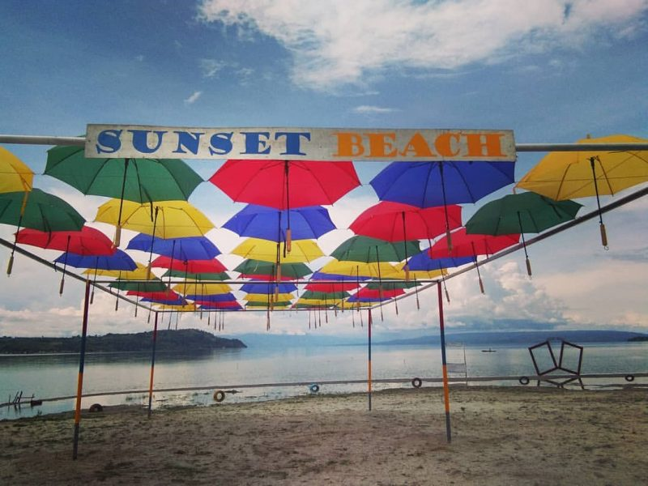

Sunset Beach

Tempat ini juga sering disebut dengan nama Tambunan Sunset Beach. Sebutan ini mungkin merujuk ke lokasi Sunset Beach Lumban Gaol, yang tepat bersebelahan dengan Pantai Landai Tambunan Lumban Gaol. Sunset Beach Lumban Gaol ini berlokasi di Tambunan, Desa Lumban Gaol, Balige. Selain untuk menikmati sunset, tak ubahnya seperti pantai lainnya di kawasan Danau Toba, pantai ini juga merupakan pantai yang cukup landai dan dilengkapi dengan beberapa wahana wisata. Mulai dari gazebo, jogging track, banana boat dan lain-lain tersedia di pantai ini. Untuk mencapai lokasi silahkan masuk dari Jalan Lintas Sumatera, atau tepatnya dari samping Kantor Pelayanan Perbendaharaan Negara, Balige. Tepat di persimpangan ada penunjuk arah untuk memandu bro dan sista menuju pantai yang yang ada di Desa Lumban Gaol. Dan biaya untuk memasuki areal pantai tidak terlalu mahal, hanya dikisaran Rp5000 saja per pengunjung. Belakangan saat ninnA berkunjung, tidak terlihat lagi petugas yag memungut tiket masuk.